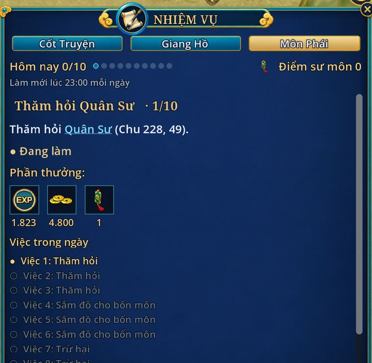

Nhiệm vụ sư môn
- Cấp 10, đã bái sư
- 10 việc mỗi ngày
- Nhận, trả ở sư phụ

Gặp sư phụ ở căn cứ phái để nhận việc. Chưa biết đường thì nhờ Sứ Giả Môn Phái ở Chu Quốc đưa đi (miễn phí). Trong sổ nhiệm vụ, bấm tên NPC là tự chạy tới.
10 việc trong ngày
- Việc 1 đến 3Thăm hỏi một NPC.
- Việc 4 đến 6Mua đồ ở tiệm rồi mang về nộp.
- Việc 7 đến 9Diệt 12 quái (từ cấp 20: 15 quái), có khi là nhặt đồ quái rơi.
- Việc 10Khiêu chiến phân thân trong 180 giây. Thua thì đánh lại, không giới hạn.
Thưởng
- Mỗi việc: kinh nghiệm, ngân lượng, 1 điểm sư môn. Việc càng sau thưởng càng to.
- Xong việc 10: quay vòng quay sư môn, thêm 1,1 đến 1,5 lần tiền việc 10.
- Điểm sư môn đổi ở sư phụ: set sư môn (từ cấp 25), Thăng Phẩm Thạch 10 điểm, Tái Tạo Thạch 2 điểm, Thẻ Thần Thú chọn con 20 điểm.
| Cấp | Ngân lượng cả ngày | Kinh nghiệm cả ngày |
|---|---|---|
| 10 | 50.000 | khoảng 18.000 |
| 20 | 100.000 | khoảng 59.000 |
| 30 | 170.000 | khoảng 167.000 |
| 40 | 260.000 | khoảng 341.000 |
Việc khó quá: chọn "Đổi việc khác" ở sư phụ (chờ 60 giây giữa hai lần đổi). Việc làm dở được giữ sang hôm sau.